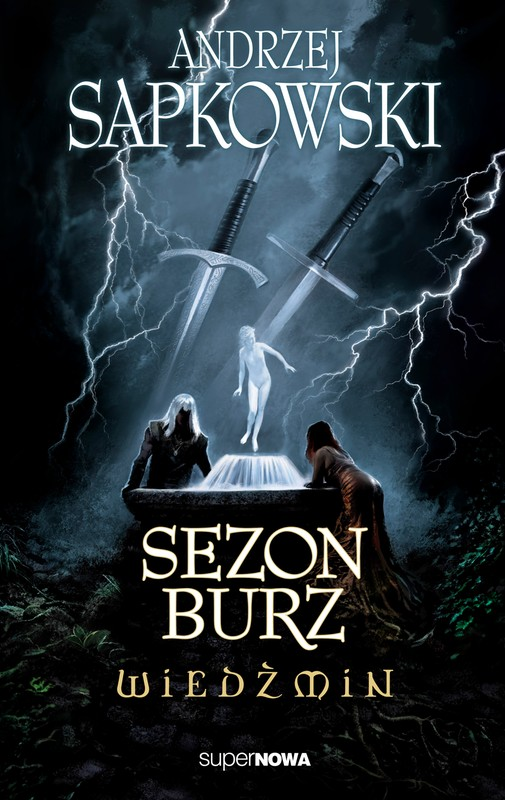

The books


- 

The Witcher Saga tells the story of Geralt of Rivia. A witcher, a monster hunter. Killing vampires, werewolves, ghouls, basilisks, and many other. He doesn't do it out of good heart. He does it for money. Witchers are an effect of magical experiments, they have no emotions, they are immune to diseases, they have a faster reflex, and heal in half the time humans do. The price for this is being sterile. They carry a silver medallion, which shows a wolf's head, and two swords. Silver and steel. People say the silver is for monsters, and steel is for humans. Witchers disagree. They say both swords are for monsters
Geralt had many adventures in his life. He had many woman, killed many people, and more monsters. He broke a spell, which changed a king's daughter into a vampire. For some reason, unlike other witchers, he was able to feel emotions, but they were distorted.
Even though witchers save people's life, they are both hated and feared. This book is a must-read for any fantasy fan. The books are available in English. In the last years CD Project Red developed 3 video games, set in Witcher's universe. Witcher 3: The Wild Hunt, won over 800 awards.